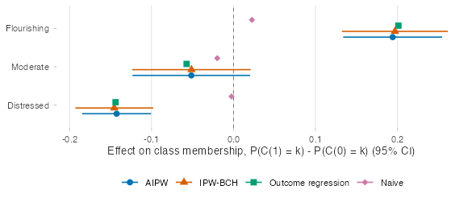
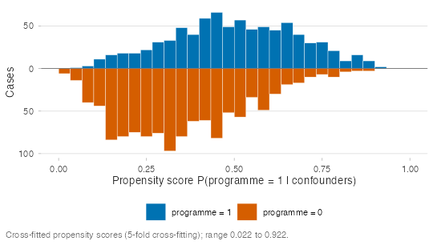
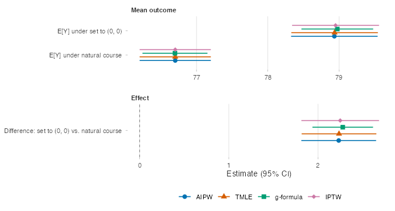

R interface to the Julia package LatentClassCausal.jl: causal inference for latent class and latent profile models. Latent classes are patterns across several indicators, so the usual causal toolkit does not say how a treatment moves people between classes, for whom an intervention on some indicators matters, or whether the latent pattern itself confounds an effect. The package answers these questions about latent classes:
| Question about latent classes | Function |
|---|---|
| Does a treatment change latent class membership? Δₖ = P(C(1) = k) − P(C(0) = k) | intervene_membership() |
| Does an intervention on exposures change membership in a latent class outcome? | intervene_latent_outcome() |
| For whom? How large is the effect within each latent class of the exposures? | intervene_within() |
| Could the latent class itself confound the effect, and how strongly would it have to? | intervene_latent_sensitivity() |
| Unmeasured confounding of treatment and class membership: how strong would it have to be? |
intervene_membership_sensitivity() (E-values, additive bias) |
| Measurement non-invariance by treatment (DIF)? | intervene_dif() |
| Heterogeneity across observed subgroups: Δₖ within a subgroup | intervene_subgroup() |
| Adjust for the latent pattern of the other exposures instead of each one | intervene_effect(adjust = "classes") |
| How would the class model classify the post-intervention profiles? (descriptive) | intervene_shares() |
Underneath, intervene_effect() provides the estimators these methods build on — the parametric g-formula, IPTW, AIPW and TMLE for static (setto()), stochastic (shift()), targeted (subgroup()) and natural-course interventions on binary exposures — and can be used on its own for an observed outcome.
The package builds on latentmixtures, which fits the measurement models (lca(), lpa()), and uses the same Julia process.
Installation
You need Julia ≥ 1.12 (for example installed with juliaup) on the PATH, or JULIA_BINDIR pointing to its bin directory.
# R packages (latentmixtures first); the repositories are private: set GITHUB_PAT first
install.packages(c("JuliaConnectoR", "rlang", "tidyselect", "generics", "remotes"))
remotes::install_github("williamlorder/latentmixtures")
remotes::install_github("williamlorder/latentclasscausal")
# Julia packages LatentMixtures.jl and LatentClassCausal.jl into the default Julia environment
latentmixtures::install_julia_packages(causal_url = "https://github.com/williamlorder/LatentClassCausal.jl")
# or from local copies:
# latentmixtures::install_julia_packages(path = "path/to/LatentMixtures.jl",
# causal_path = "path/to/LatentClassCausal.jl")The repositories are private: you need read access, and Git must be able to authenticate to github.com (for example gh auth login followed by gh auth setup-git, or a personal access token in your Git credential helper).
Documentation: https://williamlorder.github.io/software/latentclasscausal/.
The Julia session
All computation runs in one Julia process per R session, managed by latentmixtures. Fitting a model starts it if needed; latentclasscausal loads LatentClassCausal.jl into that same process the first time you call one of its functions, and loads it again if the session has been restarted. To choose the number of threads, start the session yourself before the first fit:
latentmixtures::lm_start(threads = 8) # or set JULIA_NUM_THREADS before starting R
# ... work ...
latentmixtures::lm_end() # fitted models cannot be used after this(If your latentmixtures version has no lm_start(), set JULIA_NUM_THREADS before the first call.)
1. Treatment effects on latent classes: intervene_membership()
The package ships two simulated datasets with known true effects (?programme, ?ace_study). programme: 2,000 students, participation in a school mental-health programme (programme, 0/1), five baseline confounders and eight wellbeing items six months later that measure three latent classes (Flourishing, Moderate, Distressed).
library(latentmixtures)
library(latentclasscausal)
data(programme)
# Does the programme move students into the Flourishing class?
m <- programme |> lca(low_mood:friends, K = 3) # measurement model, items only
convergence(m) # check that the best LL is replicated and EM reached the maximum
r <- intervene_membership(m, programme, treatment = programme,
confounders = c(female, age, low_ses, distress, belonging))
r # Δ ≈ +0.196, −0.055, −0.141 (true +0.18, −0.06, −0.12)
tidy(r) # one row per class: estimate, std.error, conf.low, conf.high, psi1, psi0, ...
glance(r) # N, estimator, entropy, propensity range
intervene_membership(m, programme, treatment = programme, estimator = "naive") # ≈ 0: confoundedThe data must contain the rows the model was fitted to, in the same order. The call also works with the data piped in first (programme |> intervene_membership(m, treatment = programme, confounders = c(age, female))) or with vectors (intervene_membership(m, treatment = a, confounders = X)). Factor confounders are dummy-coded.
Options: estimator = "aipw" (default), "ipw_bch", "or" (three-step ML outcome regression), "ipw_modal", "aipw_posterior" or "naive"; propensity_model and outcome_model ("linear" or "quadratic"); folds (cross-fitting, default 5); trim (propensity truncation).
What you have to assume
- No unmeasured confounding of treatment and class. Given the confounders, who gets treated is unrelated to which class people would be in under each treatment level (conditional exchangeability), and everyone has some chance of each treatment level (positivity).
- Measurement invariance. The latent classes mean the same thing for treated and untreated people and at every value of the confounders: given the class, the indicator response probabilities (or profile means) do not depend on the treatment or the confounders. In other words, the treatment and the confounders act on the indicators only through the latent class. This is what allows a measurement model fitted without covariates to be reused. If treatment changes how people answer an item directly (differential item functioning), Δₖ is biased. Check this, for example by fitting multigroup models across treatment groups or testing direct effects of the treatment on the indicators.
- A well-fitting measurement model with the right number of classes. Standard errors account for estimating the model but not for choosing K.
- Double robustness: with the default AIPW estimator it is enough for either the propensity model or the latent class regression on treatment and confounders to be correctly specified.
2. Latent classes and interventions on exposures
Childhood adversities co-occur in patterns that latent class analysis reads as a latent family context, but an intervention targets specific adversities. These functions connect the two; the running example prevents abuse and neglect (ace1, ace2) in ace_study (eight adversities, three latent classes, outcome past-year depression).
data(ace_study)
# For whom? Effect within each adversity class (posterior-weighted; bootstrap SEs refit the LCA)
ce <- intervene_within(ace_study, outcome = depressed, exposures = ace1:ace8, intervene = c(ace1, ace2),
confounders = c(age, female, parent_edu), g1 = setto(c(0, 0)), K = 3,
family = "binomial")
ce # risk difference ≈ −0.210 in the high-adversity class, ≈ −0.009 in the low one
# How would the class model classify the post-intervention profiles? (descriptive)
sh <- intervene_shares(ace_study, exposures = ace1:ace8, intervene = c(ace1, ace2),
confounders = c(age, female, parent_edu), g1 = setto(c(0, 0)), K = 3)
# Could a direct effect of the latent family context explain the effect away?
intervene_latent_sensitivity(ace_study, outcome = depressed, exposures = ace1:ace8, intervene = c(ace1, ace2),
confounders = c(age, female, parent_edu), g1 = setto(c(0, 0)), K = 3,
target = which.max(sh$pi0 - sh$pi1), family = "binomial")
# Adjust for the latent pattern of the other adversities instead of each one
intervene_effect(ace_study, outcome = depressed, exposures = ace1:ace8, intervene = c(ace1, ace2),
confounders = c(age, female, parent_edu), g1 = setto(c(0, 0)),
family = "binomial", adjust = "classes", adjust_K = 3)
# A latent class outcome: does the programme change membership in wellbeing classes?
data(programme)
mo <- latentmixtures::lca(programme, low_mood:friends, K = 3)
intervene_latent_outcome(mo, programme, exposures = programme, intervene = programme,
confounders = c(female, age, low_ses, distress, belonging),
g1 = setto(1), g0 = setto(0))The vignette (vignette("latentclasscausal"), section 2) explains each research question, the assumptions (in particular no direct effect of the class beyond the exposures, which intervene_latent_sensitivity() probes) and the status of each method.
3. The intervention estimators underneath: intervene_effect()
ace_study: 2,500 adults, eight adverse childhood experiences (ace1 abuse, ace2 neglect, … ace8), confounders age, female, parent_edu and two outcomes, self-rated health (health, 0–100) and past-year depression (depressed, 0/1).
data(ace_study)
# Would preventing childhood abuse and neglect (ace1, ace2) improve adult health?
ie <- ace_study |>
intervene_effect(outcome = health, exposures = ace1:ace8, intervene = c(ace1, ace2),
confounders = c(age, female, parent_edu), g1 = setto(c(0, 0)),
estimator = "tmle")
ie # ψ ≈ +2.265 points (true +2.00)
tidy(ie) # rows: E[Y^g1], E[Y^g0], effect
# halve the prevalence of abuse and neglect; risk difference for depression
intervene_effect(ace_study, depressed, ace1:ace8, c(ace1, ace2), c(age, female, parent_edu),
g1 = shift(0.5), family = "binomial") # ψ ≈ −0.0205 (true −0.021)
# prevent abuse only, neglect unchanged; and prevention targeted at families with low
# parental education
intervene_effect(ace_study, health, ace1:ace8, c(ace1, ace2), c(age, female, parent_edu),
g1 = intervention(function(s, a) as.numeric(all(s == c(0, a[2]))),
label = "prevent abuse only"))
intervene_effect(ace_study, health, ace1:ace8, c(ace1, ace2), c(age, female, parent_edu),
g1 = subgroup(setto(c(0, 0)), parent_edu <= 10))
# compare two static interventions instead of the natural course
intervene_effect(ace_study, health, ace1:ace8, ace1, c(age, female, parent_edu),
g1 = setto(0), g0 = setto(1))intervene is selected among exposures, in the order written, which is the order of the values in setto(). Rows with missing values are dropped (with a message). Use family = "binomial" for a 0/1 outcome (ψ is then a risk difference). The working models are set with outcome_model and propensity_model, and folds controls cross-fitting. intervention_effect_matrix(y, exposures, X, S, g1) is the same function for vectors and matrices.
What you have to assume
- Exchangeability. Given the other exposures and the confounders, the intervened exposures are as good as randomly assigned: there is no unmeasured common cause of them and the outcome.
- No latent confounding. This is the critical assumption when the exposures are indicators of a latent class. If the latent variable that produces the indicators (for example a general “adverse environment”) also affects the outcome directly, adjusting for the other indicators controls for it only partly (proxy adjustment) and ψ is biased. The estimate answers “what if we removed this exposure, holding the person’s other exposures as they are”, not “what if we changed the latent class”.
- The intervened exposures do not cause the other exposures (otherwise the other exposures are mediators, and adjusting for them blocks part of the effect).
- Positivity. People with every combination of other exposures and confounders must have a real chance of the post-intervention exposure values. The printout reports the smallest such probability and the largest weight, and warns when overlap is poor.
- Consistency. The intervention is well defined: removing an exposure by the hypothetical intervention has the same effect as not having had it.
AIPW and TMLE are doubly robust: they are consistent if either the outcome model or the model for the intervened exposures is correctly specified. The g-formula relies on the outcome model alone (bootstrap standard errors), and IPTW on the exposure model alone.
4. Sensitivity analyses
Each method rests on an assumption the data cannot check; each has a sensitivity or diagnostic tool:
| Threat | Applies to | Tool | What it reports |
|---|---|---|---|
| Unmeasured confounding of treatment and class | intervene_membership() |
intervene_membership_sensitivity() |
per class, E-values for the causal risk ratio P(C(1)=k)/P(C(0)=k) (VanderWeele & Ding 2017) and tipping points of an additive bias model (biases sum to zero over classes) |
| Measurement non-invariance by treatment (DIF), which invalidates the BCH correction | intervene_membership() |
intervene_dif() |
scaled χ² test of invariant vs treatment-specific measurement (multigroup LCA) and Δₖ with treatment-specific classification errors |
| The latent class of the exposures affects the outcome directly (latent confounding) |
intervene_effect(), intervene_within()
|
intervene_latent_sensitivity() |
tipping points of the direct class effect γ at which the effect vanishes or its interval includes 0 |
| Extreme weights from rare exposure profiles | intervene_effect() |
adjust = "classes" / "both"
|
the effect with the other exposures summarised by their latent class |
| Heterogeneity across observed subgroups | intervene_membership() |
intervene_subgroup() |
Δₖ within a subgroup |
s <- intervene_membership_sensitivity(m, programme, treatment = programme,
confounders = c(female, age, low_ses, distress, belonging), target = 1)
s # E-values and tipping points for the Flourishing class
autoplot(s)
intervene_dif(m, programme, indicators = low_mood:friends, treatment = programme,
confounders = c(female, age, low_ses, distress, belonging)) # DIF by treatment?
# latent confounding for interventions on exposures: see intervene_latent_sensitivity() in section 2Machine-learning nuisance models
Both estimators also accept flexible working models. propensity_model and outcome_model can be "lasso", "lasso_quadratic", "elasticnet", "ridge", "forest", "boost" (needs the Julia package EvoTrees.jl) or "superlearner", and learners sets the super learner’s library. Learners are fitted only within the cross-fitting training folds, and propensities from learners are bounded to [bound, 1 - bound]:
intervene_membership(m, programme, treatment = programme, confounders = c(female, age, low_ses, distress, belonging),
propensity_model = "superlearner", outcome_model = "superlearner")
intervene_effect(ace_study, outcome = health, exposures = ace1:ace8, intervene = c(ace1, ace2),
confounders = c(age, female, parent_edu), g1 = setto(c(0, 0)),
outcome_model = "superlearner", propensity_model = "lasso_quadratic",
learners = c("glm", "lasso_quadratic", "forest"))The Machine-learning nuisance models page of the LatentClassCausal.jl documentation gives the details and a Kang–Schafer simulation.
Tables
lm_table() (the table generic of latentmixtures) and causal_table() produce stargazer-style tables with stars and standard errors, in text, Markdown, LaTeX (booktabs) or HTML. Results of both kinds can be combined, and named arguments become column headings:
lm_table(`Programme` = r, `ACE 1-2 = 0` = ie) # console
lm_table(r, format = "latex", file = "tab_lcc.tex", title = "Effect on class membership")
ie_aipw <- intervene_effect(ace_study, health, ace1:ace8, c(ace1, ace2),
c(age, female, parent_edu), g1 = setto(c(0, 0)))
causal_table(AIPW = ie_aipw, TMLE = ie, format = "markdown", ci = TRUE)causal_table() works with any version of latentmixtures. When latentmixtures exports lm_table(), lm_tab() and lm_render(), the lm_table() methods are registered automatically and tables are drawn by latentmixtures’ renderer, so they match the tables of that package.
Plots
autoplot() (ggplot2) and plot() methods draw the standard figures from the stored results, and causal_plot() compares several results; all return ggplot objects and use the theme and colour-blind-safe palette of latentmixtures.
autoplot(r) # forest plot of the class effects
autoplot(r, type = "probabilities") # P(C(1) = k) vs P(C(0) = k)
autoplot(r, type = "overlap") # propensity-score overlap by treatment group
autoplot(ie) # E[Y^g1], E[Y^g0] and their difference
autoplot(ie, type = "overlap") # propensity of each intervened exposure pattern
autoplot(ie, type = "weights") # inverse-probability weights
ie_gf <- intervene_effect(ace_study, health, ace1:ace8, c(ace1, ace2),
c(age, female, parent_edu), g1 = setto(c(0, 0)),
estimator = "gformula")
causal_plot(AIPW = ie_aipw, TMLE = ie, `g-formula` = ie_gf, what = "all")


Function overview
| Function | Purpose |
|---|---|
intervene_membership(model, data, treatment, confounders, ...) |
effect of a binary treatment on latent class membership |
intervene_effect(data, outcome, exposures, intervene, confounders, g1, g0, ...) |
effect of interventions on binary exposures |
intervention_effect_matrix(y, exposures, X, S, g1, g0, ...) |
matrix interface of the above |
natural(), setto(values), shift(delta, from, to)
|
interventions |
intervention(rule), subgroup(g, condition)
|
custom and subgroup interventions |
lcc_available() |
is Julia with LatentClassCausal.jl installed? (guards examples) |
tidy(), glance(), as.data.frame(), coef(), nobs()
|
results as data frames / vectors |
causal_table(), lm_table()
|
publication tables |
autoplot(), plot(), causal_plot()
|
figures (ggplot2) |
Printing uses UTF-8 symbols (Δ, ψ, box rules) when the locale supports them; set options(latentclasscausal.ascii = TRUE) for plain ASCII.